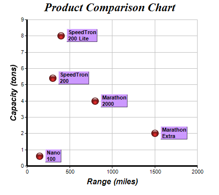

This example demonstrates adding custom labels to data points.
- The red glassy spheres in this example come from a scatter layer created using XYChart.addScatterLayer.
- The custom labels in this example is contained in an array variable, and is added as an extra field to the chart using Layer.addExtraField.
- The data label format is set using Layer.setDataLabelFormat to show the extra field.
- The font for the data labels is set to 8 points Arial Bold using Layer.setDataLabelStyle.
- Layer.setDataLabelStyle returns a TextBox object representing the prototype of the data labels. In this example, the TextBox object is used to customize the background colors, 3D borders, position offsets and alignments of the data labels.
The following is the command line version of the code in "cppdemo/scatterlabels". The MFC version of the code is in "mfcdemo/mfcdemo". The Qt Widgets version of the code is in "qtdemo/qtdemo". The QML/Qt Quick version of the code is in "qmldemo/qmldemo".
#include "chartdir.h"
int main(int argc, char *argv[])
{
// The XY points for the scatter chart
double dataX[] = {150, 400, 300, 1500, 800};
const int dataX_size = (int)(sizeof(dataX)/sizeof(*dataX));
double dataY[] = {0.6, 8, 5.4, 2, 4};
const int dataY_size = (int)(sizeof(dataY)/sizeof(*dataY));
// The labels for the points
const char* labels[] = {"Nano\n100", "SpeedTron\n200 Lite", "SpeedTron\n200", "Marathon\nExtra",
"Marathon\n2000"};
const int labels_size = (int)(sizeof(labels)/sizeof(*labels));
// Create a XYChart object of size 450 x 400 pixels
XYChart* c = new XYChart(450, 400);
// Set the plotarea at (55, 40) and of size 350 x 300 pixels, with a light grey border
// (0xc0c0c0). Turn on both horizontal and vertical grid lines with light grey color (0xc0c0c0)
c->setPlotArea(55, 40, 350, 300, 0xffffff, -1, 0xc0c0c0, 0xc0c0c0, -1);
// Add a title to the chart using 18pt Times Bold Itatic font.
c->addTitle("Product Comparison Chart", "Times New Roman Bold Italic", 18);
// Add a title to the y axis using 12pt Arial Bold Italic font
c->yAxis()->setTitle("Capacity (tons)", "Arial Bold Italic", 12);
// Add a title to the x axis using 12pt Arial Bold Italic font
c->xAxis()->setTitle("Range (miles)", "Arial Bold Italic", 12);
// Set the axes line width to 3 pixels
c->xAxis()->setWidth(3);
c->yAxis()->setWidth(3);
// Add the data as a scatter chart layer, using a 15 pixel circle as the symbol
ScatterLayer* layer = c->addScatterLayer(DoubleArray(dataX, dataX_size), DoubleArray(dataY,
dataY_size), "", Chart::GlassSphereShape, 15, 0xff3333, 0xff3333);
// Add labels to the chart as an extra field
layer->addExtraField(StringArray(labels, labels_size));
// Set the data label format to display the extra field
layer->setDataLabelFormat("{field0}");
// Use 8pt Arial Bold to display the labels
TextBox* textbox = layer->setDataLabelStyle("Arial Bold", 8);
// Set the background to purple with a 1 pixel 3D border
textbox->setBackground(0xcc99ff, Chart::Transparent, 1);
// Put the text box 4 pixels to the right of the data point
textbox->setAlignment(Chart::Left);
textbox->setPos(4, 0);
// Output the chart
c->makeChart("scatterlabels.png");
//free up resources
delete c;
return 0;
}
© 2023 Advanced Software Engineering Limited. All rights reserved.